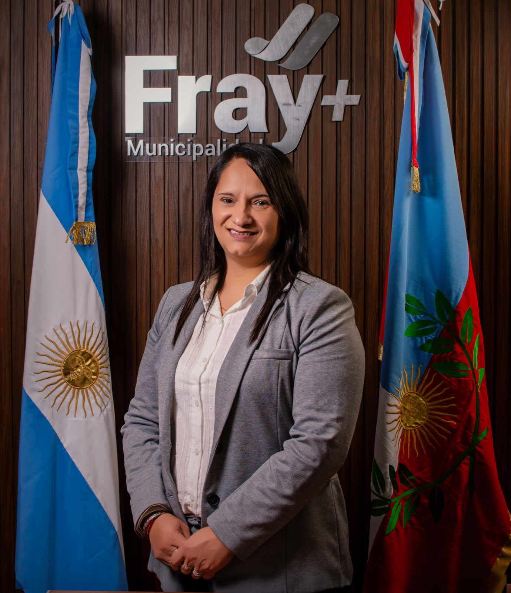

Secretaría de Gobierno
Gobierno municipal
Conocé al gabinete
Autoridades, áreas de gestión y canales institucionales de la Municipalidad de Fray Mamerto Esquiú.

Intendencia
Intendenta Municipal
Prof. María Alejandra BenavidezConduce la planificación general del municipio y coordina las políticas públicas para el desarrollo del departamento.
Equipo de gestión
Gabinete municipal
Fiscalía Municipal
Dra. Agustina Messeri
Secretaría de Hacienda
CPN. Paula Plaza
Secretaría de Producción y Ambiente
Lucas Perelló
Secretaría de Obras y Servicios Públicos
Arq. Natacha Solá Vigo
Secretaría de Desarrollo Social
Daniel Romero
Secretaría de Educación Municipal
Prof. Claudia Acevedo
Secretaría de Cultura, Turismo, Deportes y Emprendedurismo
Clara Figueroa
Juzgado Administrativo Municipal de Faltas
Dra. Natalia Santillán
Estructura municipal